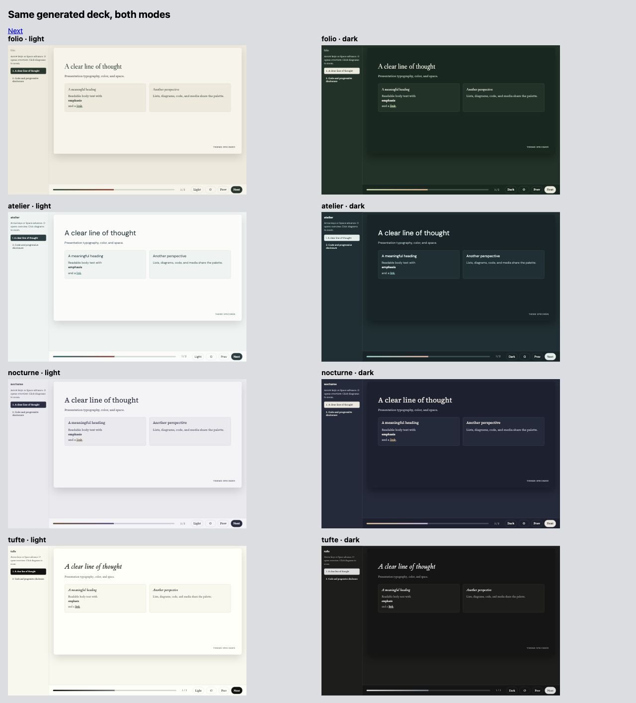
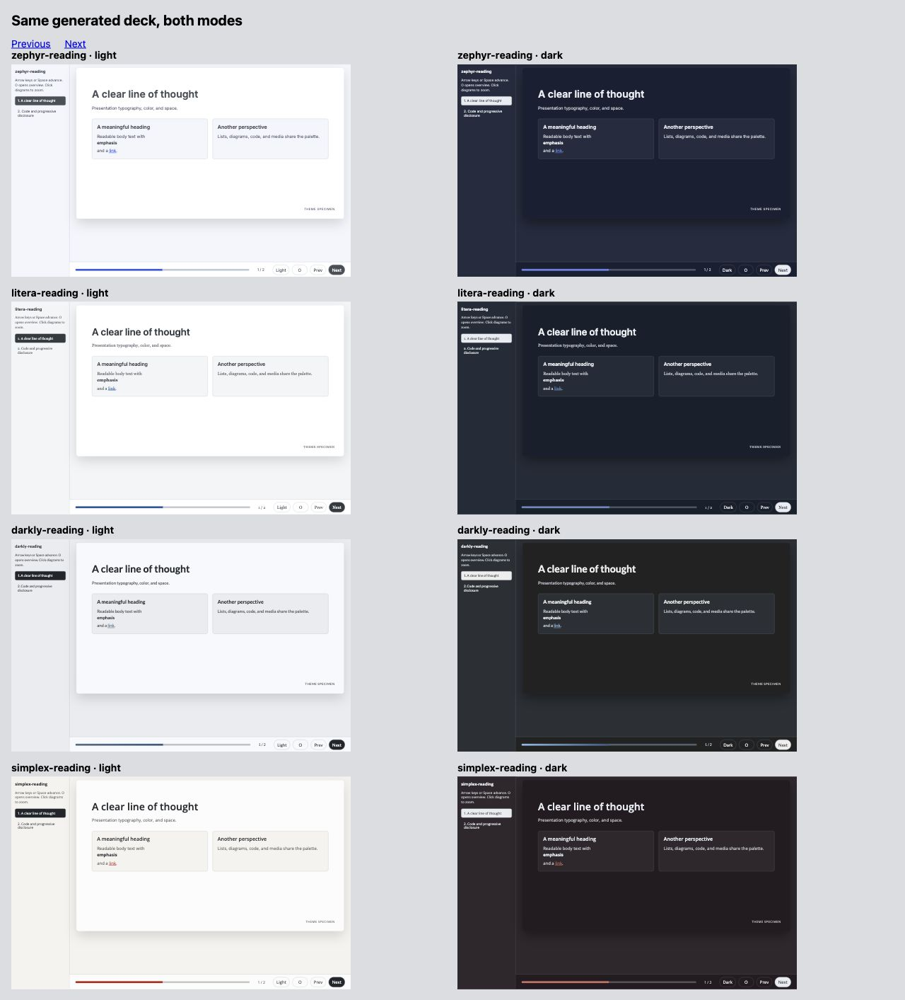

Decision draft · 9 November 2026 · no production theme changes
Folio, Atelier and Nocturne have coherent light/dark identities in the current
htmpres adapter. Atelier fits its shared presentation shell particularly well;
Folio and Nocturne offer distinct editorial voices. Tufte is a valuable restrained
alternative, but the surrounding card-and-shadow slide UI does not yet express
its philosophy. All five Reading themes deserve equal attention. The
actionable specification at the bottom
defines proposed changes for all nine owned themes, separately for blogs and
slides, with swatches, typography and spacing ladders. Stock Bootswatch is
reference material only.
This is the first of three linked decisions. Part 2
tests these judgments against Schwabish's visual presentation guidance.
Part 3 tests scientific color systems for all nine
priority themes. These are recommendations for selection, not an approved redesign.
The current catalog contains 35 paired themes / 70 modes, not 32: Bootstrap,
25 Bootswatch themes, Folio, Atelier, Nocturne, five Reading refinements, and
Tufte. The three older unpaired seeds, Sage, Mono Grid and Blank, are outside
this paired-theme audit. Thus the CLI's 38 names and this report's 35 pairs
describe different scopes. Archived original/refined designs in Elegant are
also not extra htmpres themes.
The unit of assessment is the current htmpres rendering, not an upstream
Bootswatch demo. Its adapter imports palette roles and font stacks, then applies
the same navigation, slide surface, cards, spacing and code system. It does not
import most source component styling, reading widths, margins, buttons or
responsive typography. This explains why many stock themes look similar here,
and why an excellent source documentation theme can still have slide problems.
The four custom/Tufte pairs have designed complementary palettes. Light-native
stock themes use Bootstrap dark variables. Dark-native stock themes and Reading
refinements use htmpres complementary adaptations. Do not count those derived
modes as upstream-designed or inherit the upstream review's scores for them.
Evidence and review method
The rubric comes from the earlier Elegant review of Refactoring UI, checked
against the original 252-page PDF for this pass. The authors did not evaluate
these themes. Its six lenses are:
Lens
What earns confidence
Source locations in the previously reviewed 252-page edition
Hierarchy
Size, weight, tone and spacing establish clear priorities without making secondary information unreadable
pp. 36–47, 54–59
Spacing and grouping
Related content is close; section gaps and inner padding have consistent jobs
pp. 66–74, 96–99
Color roles
Text, surfaces, accents and states have distinct readable roles
pp. 42–44, 142–168
Layout and scale
Width and responsive changes fit the content and viewing task
pp. 76–81, 92–95, 114–116
Surfaces and restraint
Edges, shadows and fills explain groups without competing with them
pp. 190–192, 224–241
Personality
Typography, palette and component shape describe the same character
pp. 20–26, 108–112
We used the existing Elegant UI guide
and design assessment,
including their source-code rubric and disclosed self-review limits. We also
read the original PDF at pp. 20–22, 36–44, 66–74, 76–81, 96–99, 102–107,
114–116, 142–160 and 162–168, and visually checked the illustrations at
pp. 73, 105, 147, 154 and 164. Remaining page
pointers in the rubric come from the earlier Elegant review. The original is
kept in the ignored sibling nossaifd-talks/books folder; no book pages are
redistributed here. The present classifications are our own judgments, and no
numerical aesthetic leaderboard is implied. Source fingerprints are recorded in
source-manifest.json.
Fresh evidence comprises the checked-in catalog, its shared adapter, a complete
35-theme renderer smoke run, solid-color measurements for all 70 modes, and nine
browser contact sheets of the same actual rendered slide in all 70 modes.
Atelier was also inspected full size, switched from light to dark, and advanced
to its code slide. Contact sheets establish composition and relative character;
they are not a small-text legibility or interaction audit of every theme.
No physical projector, phone or reader study was used.
The raw role table reports unrounded calculations.
The numeric screen uses 4.5:1 for normal text on paper/panel/code and 3:1 for
large text only where applicable. These thresholds come from
WCAG, not
Refactoring UI. A ratio is evidence about one color pair, not a whole-theme
accessibility certificate. Borders and decorative surfaces are not normal text.

What the original book adds to this review
Refactoring UI's pp. 142–151 describe a vocabulary of neutral shades, primary
shades and additional semantic colors, anchored to actual uses such as text,
buttons and tinted backgrounds. Page 147 explicitly recognizes that graph
categories can need more accent colors. A five-swatch mood board is therefore
not a sufficient theme specification, and our five aliases collapsing to one
or two colors is a substantive limitation.
The same book recommends keeping those choices finite rather than inventing
another shade for every component. A useful revision would define separate
accent ink, accent fill, focus, context and state roles, then test each on its
allowed surfaces. The dark-text/pale-fill example on p. 164 is particularly
relevant: making every accent darker or brighter cannot solve every role at
once without changing visual emphasis.
Pages 152–157 also show why equal HSL lightness does not mean equal perceived
brightness. Their practical hue/shade adjustments help UI design; they do not
establish that a generated scientific color scale has equal perceptual steps.
Part 3 measures that separately. Pages 166–168 reinforce the need for cues
besides color; chart labels, line styles and symbols belong in the design
contract, not merely in accessibility footnotes.
Shared problems that theme selection cannot solve
The UI adapts color more than design language. Every theme gets a rounded,
shadowed slide and similar cards. This supports consistency for Atelier, but
makes Tufte less booklike and weakens the distinctive shape systems of stock
themes. Audit the selected theme's structural variant before editing its hues.
Body copy is often treated as secondary. The specimen's .card p uses
muted ink. That is a meaningful reading role, not optional decoration. Weak
muted colors therefore affect ordinary explanations, not just footnotes.
The accent vocabulary overstates its distinctions.teal and indigo
become the same accent; amber, rose and violet become the same secondary.
Four Reading pairs also set accent equal to secondary. Those aliases cannot
stand for five categories or five semantic states. Use semantic role names
and a separate chart cycle in a future change.
Role validation is surface-specific. Several derived accents were made
readable against paper but fail the same screen on panels. The light/dark
pair must be validated as a matrix of roles and surfaces.
Syntax colors are shared across families. Code keeps its function, but
its blue/purple/green/yellow/pink grammar can feel imported into Folio or
Nocturne. A selected family should get a deliberate code and figure policy;
coloring every token with a brand hue would destroy useful distinctions.
Reading scale is not presentation scale. In the full-size 1280×720
Atelier specimen, the title was 37.6px, card headings 18.88px, card text
16px and code 14.4px. That is evidence about this fixture/layout, not every
slide. It nevertheless requires a dedicated projected-presentation profile.
Font names are not proof of font delivery. Custom and Reading families
bundle local fonts; stock families may fall back if their named typeface is
absent. Judge the delivered font, and verify fallbacks before attributing
fine typographic character to a stock font name.
Detailed review of the nine priority themes
Theme
Light mode
Dark mode
Design judgment and next decision
Folio
Warm paper, green text/accent and restrained rust form a convincing literary family. Display and body serifs have clear roles.
Green-black paper and pale sage retain that family instead of becoming generic charcoal.
Retain both. Strong source identity survives adaptation. Reduce the common slide shadow for a more editorial expression; test display-serif readability at projection distance.
Atelier
Cool near-white, teal-grey text and DM Sans give a clear technical/studio voice. Quiet panels support grouping.
Blue-green near-black and pale teal preserve the same relationships.
Practical comparison base. Retain both. Give primary content a stronger role than the current muted card text; tune a presentation scale and chart typography together.
Nocturne
Pearl-grey with brown and purple is coherent, though less immediately recognizable than its dark counterpart.
Ink-blue, warm brass and literary serif create a distinctive evening palette.
Retain both; lead with dark as its identity. Use brass selectively. Review chart/title emphasis together so warm highlights do not compete.
Tufte
Cream paper and near-black serif are highly restrained; italic headings preserve character.
Neutral near-black/grey is a convincing reading companion.
Retain as a different philosophy. The shared shadowed frame and cards work against the identity. Its accent equals ink, so distinguish links by underline and figure emphasis by an explicit optional color.
Zephyr Reading
Inter, controlled blue and quiet grey-blue panels make a strong modern UI.
The blue-tinted adaptation is coherent in hue; accent-on-panel is only 3.97:1.
Retain native light; repair dark before recommendation. It offers a distinct neutral sans alternative to Atelier, not merely a lesser custom theme.
Simplex Reading
Open Sans, warm neutrals and deep red form an economical, coherent identity.
Warm dark surfaces preserve character; red-on-panel is 4.13:1.
Equal-priority candidate. Retain light and repair dark. Reserve red branding from negative-data semantics, or use a different chart highlight.
Pulse Reading
Deep purple, soft lavender panels and system sans are restrained and legible.
Its complementary accent reaches 4.53:1 on paper but 3.90:1 on panel.
Equal-priority candidate. Retain light and repair dark. Purple offers a useful identity outside the many blue/teal options.
Litera Reading
Serif body plus clear sans headings is a useful reading/presentation hybrid. Blue links are much stronger than stock Litera.
Ink-blue adaptation has strong main text, but accent-on-panel is 3.93:1.
Retain light; repair dark. Confirm that prose, lists, captions and chart text maintain intentional font roles rather than inconsistent local overrides.
Darkly Reading
The complementary blue-grey light palette is restrained and has usable primary text.
Charcoal, Lato and pale blue links form a practical dark UI. The secondary is dark blue: only 1.86:1 on panel.
Retain dark with a secondary-role repair; retain light as conditional companion. A dark secondary fill can be useful with suitable text, but it must not be reused as a readable text/line accent.
The four custom/Tufte identities remain candidates because they provide different
visual purposes, not because they are ours. The same principle keeps Simplex
and Pulse Reading in the detailed experiments. Their native palettes are
arguably cleaner than some more celebrated stock alternatives.

Complete catalog critique
The judgments below concern the current adaptation. A theme whose source relies
on gradients, unusual borders or special component styling may lose much of
that personality when only its colors and fonts are imported. Every row includes
both modes; the nine priority rows above supply their fuller interpretation.
Stock-theme repair language describes limitations for comparison and adoption;
it is not a proposal to edit the original Bootswatch themes. Only our nine owned
variants enter the change specification below.
Theme
Light-mode critique
Dark-mode critique
Decision for this workstream
Bootstrap
Clear neutral baseline; blue accent is marginal on paper and 4.27 on panel.
Conventional charcoal; readable main accent, less dependable secondary text.
Keep as baseline, not a distinctive finalist.
Cerulean
Pleasant blue identity undermined by accent 2.77 on paper and muted panel text 4.01.
Generic Bootstrap structure with a much more readable light blue.
Carry back a role contract, not slide pixel sizes: readable ink on each
surface, accent text separate from accent fill, state semantics separate from
category colors, explicit body/heading/code font roles, and consistent light/dark
relationships. Audit the paired SmallDocs CSS and Quarto Sass together if those
roles change. The current 640px reading width and 1.45 leading are document
decisions; the proposal below revisits prose leading and defines a separate
projection profile with different size/space assignments.
Do not overwrite a source Reading theme with an htmpres-derived dark palette
merely because it exists here. First decide whether that source project should
publish a designed pair at all. Fixing htmpres adaptation defects can stay local
to the importer/adapter unless a native source defect is independently reproduced.
Provisional selection for Part 2
Advance all nine priority themes. Within them, test Atelier as a practical
presentation comparison; Folio/Nocturne for distinct editorial voices; Tufte for a
minimal direction; and all five Reading alternatives with the repairs described
above. Retain Bootstrap and stock Pulse/Simplex/Zephyr as comparison controls.
No theme is selected for implementation yet.
Proposed changes to our nine themes: a shared foundation, two reading conditions
Working specification for joint review, added 9 November 2026. This is the
actionable conclusion of Part 1. It supersedes any implication above that we
should redesign stock Bootswatch themes or select one winner before defining
the system. Our editable scope is Folio, Atelier, Nocturne, Tufte and all five
Reading variants. Stock Bootswatch remains comparison material. Changes to a
Reading variant belong to our named override/extension, not the upstream theme.
For Tufte, the proposal concerns our adaptation, not a fork of its upstream philosophy.
The aim is to give each family a complete vocabulary for text and interface
components, then map that vocabulary deliberately to blogs/documents and
presentations. Shared meaning does not require identical geometry. A Tufte
text group and an Atelier panel can express the same grouping role without
having the same border, background or shadow.
The earlier observations measure the current htmpres adaptation. The proposal
below also checks the owned Elegant sources: the custom themes' theme.json,
common.css and design.css, and the Reading variants' theme.json and
reading.css. That distinction matters: Reading sources already separate
link, button, on-button and semantic-state colors. We should preserve that
work, not recreate it under new names or “repair” a good button fill because it
failed when the slide adapter reused it as text.
Compatibility with Part 2, before choosing values
I read Part 2 before deriving this proposal. Its core recommendations complement
this foundation: readable primary prose, surface-specific text roles, separate
accent ink/fill, deliberate emphasis, and different document/projection scales.
It does not require every theme to become a neutral sans-serif presentation.
Part 2 recommendation
Part 1 foundation
Relationship / decision still to make
Ordinary explanations must remain readable
Paragraphs and list items use primary ink, including inside a card; supporting metadata alone uses secondary ink
Agreement. This changes role assignment before changing every shade.
Text accent must work on every intended surface
Separate accent text, accent fill and text-on-fill; publish tested combinations
Agreement. Carry the existing Reading source distinction through the adapter.
Reduce competing visual emphasis
Quiet default headings, one deliberate emphasis role, neutral secondary actions
Agreement. A large palette is available vocabulary, not a demand to use every hue on one screen.
Projection needs larger, stronger type
Same finite type vocabulary; separate blog and audience-slide subsets
Agreement on direction. Exact slide sizes below are proposed starting values, not a room-tested guarantee.
Sans often survives projection better
Preserve serif identities; propose stronger regular serif text and sans UI labels
Open choice for Folio, Nocturne, Litera and Tufte: test serif body versus a sans projection profile. Do not silently remove their identity.
Subtle panels may vanish in projection
Blog panels may use quiet fills; slides must also group through spacing, headings and alignment
Open choice: strengthen the boundary only when grouping needs it, or remove the box. Tufte starts with no box.
Use brass/rust/red sparingly
Retain family hues but stop automatically coloring all headings, controls and chart marks with them
Open choice about the amount of emphasis, especially Nocturne and Simplex.
Few typefaces simplify a slide
Preserve distinct display/prose/UI/code roles, using only the needed subset in each view
Folio's optional display face adds a fourth family on a code-heavy page. Compare keeping it only for covers versus simplifying to Source Serif + DM Sans + mono.
Figures require data-appropriate colors
UI swatches below are not a category cycle or scientific colormap
Agreement. Part 3 chooses data encodings after these interface roles are stable.
We will use that table when reviewing Part 2 together. The unresolved rows are
choices to compare; this addition does not quietly decide all of them.
Foundation A: colors are named by job, with explicit combinations
Keep the existing characteristic paper colors and hue families. Add the shades
and distinct roles needed to use them consistently. The finite swatches below
are candidate UI shades, derived from current anchors and checked after
rounding to actual hex values. They are not claimed to be perceptually uniform
scientific ramps. Named current anchors remain available when a useful existing
color does not fall on a newly generated shade step.
Use three layers: swatch → semantic role → component use. A component asks
for accent-text or surface-panel, not “blue-500”; the light/dark role mapping
chooses the swatch. A figure asks a different data-color API, not these UI roles.
Do not reuse button fill as small text merely because both belong to the same hue family.
Accent fill + on-accent ink
Primary button, checked control, selected control when a fill is needed
Sparse diagram/emphasis fill or local controls
Do not assume on-fill ink is always white, or always the page color. Test the pair.
Secondary action / secondary text
Neutral alternative button; an optional second accent only for a defined job
Mostly neutral supporting labels; editorial secondary hue used deliberately
Do not give four Reading themes arbitrary extra hues merely to fill five legacy color aliases.
Decorative line
Dividers, table rules and gentle panel boundaries
Optional organizational rule
A decorative line is not automatically strong enough to identify a control.
Control boundary / focus
Input outline and visible keyboard focus against the actual adjacent surface
Interactive controls; presentation canvas content uses separate grouping decisions
Do not make every decorative line dark just to repair input boundaries.
Success / warning / danger / information
Explicit state background, state ink, border and word/icon
Only where those meanings exist in the material
Simplex brand red is not an error state; Nocturne purple is not “negative data.”
The candidate screen uses 5:1 for normal UI text roles on their specified
paper/panel/code surfaces, 4.5:1 for text on a filled button, and 3:1
for the tested focus/control boundary. The 5:1 target is our modest reserve
over the usual 4.5 normal-text screen; it is not a new WCAG rule or a guarantee
under projection. Decorative rules and large heatmap cells have other jobs.
The evidence table reports exactly which pairs were tested. Hover, disabled,
selected, pressed and error states must be mapped and checked as complete
components before production adoption; a base palette alone is not a complete
interaction audit.
For primary link/button hover, prefer another appropriate shade of the same
family, or an underline/boundary change. The custom blog sources currently map
primary hover to the secondary hue; changing a green primary action to rust
on hover should become a conscious design choice, not a generic default.
Do not make all secondary actions colorful. Preserve word/icon cues for states.
Foundation B: a finite typography ladder and explicit font jobs
Refactoring UI's hand-selected size scale on p. 105 supplies the vocabulary:
12, 14, 16, 18, 20, 24, 30, 36, 48, 60, 72. Its spacing chapter, pp. 70–74,
and type chapter, pp. 102–107, favor a constrained set of useful decisions over
an arbitrary size for every selector. We freshly checked those passages and
the scale illustrations for this addition. The following assignments are ours.
For blogs, express these nominal CSS-pixel values in rem against a normal
16px browser reference (18px = 1.125rem, 20px = 1.25rem), while honoring user text
preferences. Set body size as a role; do not reset the root to 17px and then
silently reinterpret the whole ladder. For the current 1280×720 slide canvas,
these are design-coordinate pixels before the whole slide is scaled to fit.
They are neither physical projector pixels nor point sizes. A responsive
reading view of the slide deck needs the blog profile rather than tiny scaled
presentation text. Avoid nested em font-size multiplication; relative units
remain useful for line length and local optical details.
Job
Blog/document profile
Audience-slide profile
Explicit exclusions
Small metadata
14; 16 when important
24 if the audience must read it
12 reserved for exceptional nonessential UI badges; never article prose or required slide text.
Navigation, controls, form labels
16, normal/medium weight
14–16 only in presenter/editor controls outside the audience canvas
Don't project the reader's sidebar or shrink control labels to 10–12px to preserve a layout.
Body and list text
18 for sans families; 20 for serif prose
30 regular; 36 for a short key statement
No 16–20px audience paragraphs. Dense material must get a different layout, not automatic shrink-to-fit.
Lead / standfirst
20 or 24
36
It is a separate role, not a random local percentage.
Minor heading
20 or 24
36
Use weight/spacing as well as size; don't need an additional heading size for every component.
Section heading
30
36 or 48 according to level
Keep the same level consistent within the artifact.
Page / slide title
36; 48 for editorial display on wider screens
48
Long titles can wrap; do not automatically compress letter spacing until they fit.
Cover / display
48, occasionally 60 on a landing page
60 or 72
72 is not the default title of every slide or article.
Code
16; inline code aligned optically with surrounding text
24 minimum trial, 30 preferred
No inherited .78/.85rem code captions. Wrapping, excerpting or another view precedes shrinking.
Table / figure labels
16–18, depending on importance
24–30 at the placed size
A plot's internal 12pt setting says nothing about its final size after embedding.
Use line heights as a small independent set: 1.1/1.2 for short display and
headings, 1.35 for slides, 1.5 for UI/code, 1.6 for long prose. These are
starting role assignments; check actual font metrics and avoid fixed-height
containers that clip accents or descenders. Use regular 400 body text and a
real available 600/700 for hierarchy. Folio's display face is 400 only; Lato's
bundled emphasis is 700. Do not request an unavailable 600 and mistake synthetic
weight for a carefully designed typographic step.
Theme
Prose / explanatory text
Headings and display
UI, labels and code
Folio
Source Serif 4, 20 blog / 30 slide
Libre Caslon Display only at large title/display sizes; Source Serif 4 for section headings
DM Sans UI/labels; IBM Plex Mono code. Sans slide-body alternate remains a Part 2 choice.
Atelier
DM Sans, 18 / 30
DM Sans; use real 600 for smaller hierarchy and 400/600 for large titles
Same sans UI; IBM Plex Mono code. Relax very tight tracking at small sizes.
Nocturne
Source Serif 4, 20 / 30
Source Serif 4, with warm color reserved for selected emphasis
DM Sans UI/labels; IBM Plex Mono code. Sans slide-body alternate remains open.
Tufte
ET Book, 20 / 30, existing serif fallback when unavailable
ET Book regular for projected headings; italic sectional headings remain an optional reading characteristic
Preserve restrained existing UI/mono fallbacks; do not claim DejaVu Serif in a plot is ET Book.
Zephyr Reading
Inter, 18 / 30
Inter 600/700 where delivered
Inter UI; IBM Plex Mono code.
Simplex Reading
Open Sans, 18 / 30
Open Sans 600/700
Open Sans UI; IBM Plex Mono code.
Pulse Reading
System sans, 18 / 30
Same system family; deliberate hierarchy
System UI; IBM Plex Mono code. Platform variation is explicit, not a font-loading failure.
Litera Reading
Georgia, 20 / 30
System sans for section headings; serif prose remains distinctive
System sans UI/labels; IBM Plex Mono code. Compare sans slide-body only in Part 2.
Darkly Reading
Lato, 18 / 30
Lato 700 emphasis; 400 ordinary text
Lato UI; IBM Plex Mono code.
This replaces scattered size multipliers in our owned overrides. It does not
replace every serif with sans, force all headings into the accent color, or
make the original Bootswatch defaults conform to our scale.
Foundation C: spacing, measure and surface treatment
Use one spacing vocabulary with different role assignments:
0, 4, 8, 12, 16, 24, 32, 48, 64, 96, 128. This is the useful lower subset of
the example on Refactoring UI p. 73, with zero added for deliberately unboxed
content. Gaps get farther apart as they grow; do not generate every multiple
of four. Border widths 1 and 2 and radii 0, 2, 4, 8 are separate scales,
not violations of the spacing vocabulary. Larger sizing values such as 640
belong to a container-width decision, not a 640px paragraph margin.
Layout job
Blog/document mapping
1280×720 presentation mapping
Page edge / safe area
24 desktop gutter, 16 narrow screen; content centered within available width
64 canvas inset; 48 may be tested as a deliberate compact profile, not an automatic fallback
Related inline items
8; 4 for tight icon/label relation
12 or 16 for meaningful adjacent items
Label → field / heading → its text
8 for form labels; 12 or 16 after a heading
16 within a group; 32 from main title to content
Paragraph separation
16, without also stacking an equal top margin
24
New subsection
32 above a minor heading, 48 above a major section
32 between blocks; 48 between genuinely separate groups
Columns
32 between related content columns; wider layout may use 48
48 default; do not buy another column by shrinking body text
Bounded panel / code padding
24 panel; 16–24 code according to density
32 panel; 24–32 code
Unboxed text grouping
0 inner padding; groups separated by 32/48
0 inner padding; groups separated by 32/48, particularly Tufte
Major opening / closing space
64; 96 only for a deliberately spacious landing section
64 or 96 for cover compositions; 128 only where content permits
The grouping rule is more important than the particular number: space between
groups exceeds space within a group. A 16px heading-to-text gap and 48px
between sections explains hierarchy without another box. Do not apply padding
and margins twice at nested container boundaries.
For blog prose, start with the existing 640px maximum and check actual line
length, aiming around 55–70 characters, within the book's 45–75 range
(pp. 114–116). A 60–65ch constraint is a useful approximation, not a character
counter; serif and sans metrics differ. Figures and tables may extend beyond
the prose measure. Keep the wider article layout available for navigation and
margin notes, but collapse those columns on narrow screens. Use the larger
sans/serif body size to improve reading without automatically widening the text.
For slides, use the content's geometry: two columns are appropriate only when
the proposed sizes and gaps fit. Keep title, body and figures aligned to a few
shared guides. A framed preview in the authoring application may help distinguish
the slide from the surrounding window; the projected/exported canvas itself
gets no permanent drop shadow or ornamental rounded frame.
Default component shape is intentionally different by family: Folio radius 2,
Atelier 0, Nocturne 4, Tufte 0, Zephyr Reading 8, Simplex Reading 2, Pulse Reading
4, Litera Reading 2 and Darkly Reading 4. These are proposed choices from the
radius vocabulary, not claims that every source currently has those values.
Use no resting card shadow in these starting profiles. A blog menu or dialog
may use one restrained elevation treatment to communicate overlap; an article
paragraph is not a floating object. Tufte begins without card fill, border,
radius or shadow; code and meaningful warnings can still have functional
boundaries. Atelier retains square ruled organization rather than inheriting
the rounded common slide shell.
The swatches and ladders to use
The following generated specimens make the proposal inspectable. Each family
has neutral and accent shades, preserved anchors, and light/dark role choices.
The numeric results distinguish a changed text role from a retained fill.
The shared type and spacing boards show the vocabulary; the tables above
specify which steps belong in which medium. This is an available vocabulary,
not a mandate to use every step on every page.
The numbered families run from pale 50 to dark 950, with the current light-mode
hue anchor at 500. They are candidates for future component states, not a rule
that every primary button must use 500 in both modes. For this first profile,
use the explicit named anchors and tested role assignments shown on each board;
leave the other shade steps unused until a component needs them. This preserves
the designed dark-mode hues and paper temperature instead of replacing them
with mechanically chosen numbers.
These examples make the distinction between a role repair and a redesign
concrete. The ratios here are against the panel; the full evidence also checks
paper and code surfaces. A value just below our proposed 5:1 reserve is not
automatically a failure of the usual 4.5:1 text screen.
Theme / mode
Proposed role change
Panel contrast, current → candidate
Folio light
Supporting ink #5f6b62 → #5a655d; main ink and paper retained
4.61 → 5.03
Atelier light
Supporting ink #526d70 → #516b6e
4.95 → 5.09
Nocturne light
Supporting ink #626779 → #5e6274
4.66 → 5.01
Tufte light
Supporting ink #6b6b69 → #6a6a68; this is only a small reserve adjustment
4.998 → 5.07
Zephyr Reading dark
Accent text #6782ec → #8595f0; keep fill separate
3.97 → 5.02
Simplex Reading dark
Accent text #d16c62 → #da8075; keep fill separate
4.13 → 5.01
Pulse Reading dark
Accent text #9379bb → #a58fc6; keep fill separate
3.90 → 5.04
Litera Reading dark
Accent text #6689bc → #819cc7; keep fill separate
3.93 → 5.03
Darkly Reading dark
Secondary text #375a7f → #90a0b6; retain #375a7f button fill with white ink
1.86 → 5.00
Darkly Reading light
Accent text #556d87 → #50667f
4.52 → 5.00
The four light-native Reading themes also get neutral secondary text rather
than a duplicate brand accent. Their native link/button distinction remains.
The generated table contains 342 base role/surface checks across 18 modes;
state ink/border pairs and Tufte's optional highlight fill/ink are checked
separately. None of these candidate hex values has been applied to production.
Candidate foundation specimens
Research proposals; stock Bootswatch remains reference-only. General blog paired modes are proposals, not existing native Reading pairs. Numerical reserves do not guarantee physical projection performance.
CIELAB straight segments through white / original light anchor / black, sRGB channel clipping and 8-bit rounding. Not perceptually uniform or scientific colormaps. Repairs take first 0.001 Lab step toward best black/white endpoint meeting every intended surface. Original named anchors retained.
Shared type ladder
12 · Reading ideas
14 · Reading ideas
16 · Reading ideas
18 · Reading ideas
20 · Reading ideas
24 · Reading ideas
30 · Reading ideas
36 · Reading ideas
48 · Reading ideas
60 · Reading ideas
72 · Reading ideas
Reading: metadata 14; navigation/control 16; sans body 18, serif body 20; heading 24/30/36; Folio/Nocturne optional display 48. Slides: body 30, key text 36, heading 36, title 48, hero 60/72, caption/code 24 (code 30 preferred). Below 24 is outside audience canvas or presenter controls; 12 only nonessential editor detail. Refactoring UI type p105.
Shared spacing ladder
0px
4px
8px
12px
16px
24px
32px
48px
64px
96px
128px
Refactoring UI spacing p73 subset. Blog: paragraph gap 16; heading after 12/16 before 32/48; panel padding 24; section gap 48; outer gutter 24 desktop / 16 mobile. Slides: outer 64; columns 48; block gap 32; paragraph gap 24; title-content 32; panel padding 32; in-group 16. Tufte text groups unboxed without inner padding. Border 1/2 is separate. Radius vocabulary 0/2/4/8. No permanent slide/card shadow; only floating blog menus/editor preview UI.
Folio · paired swatch board
light · radius 2
anchor-paper #f8f4eb
anchor-ink #25372d
anchor-muted #5f6b62
anchor-panel #efe9dc
anchor-line #d4d6c7
anchor-accent #254f38
anchor-secondary #9d442b
anchor-code #eee9de
neutral-50 #e7e9e8
neutral-100 #cfd3d1
neutral-200 #a1a9a4
neutral-300 #75817a
neutral-400 #4b5b52
neutral-500 #25372d
neutral-600 #1f2d25
neutral-700 #19231e
neutral-800 #141a16
neutral-900 #0b100d
neutral-950 #060807
primary-50 #e7ece9
primary-100 #d0d9d4
primary-200 #a3b5aa
primary-300 #789282
primary-400 #4e705c
primary-500 #254f38
primary-600 #20402e
primary-700 #1a3124
primary-800 #15231a
primary-900 #0d1510
primary-950 #070c09
secondary-50 #f8ebe8
secondary-100 #f0d8d1
secondary-200 #dfb2a4
secondary-300 #cb8d7a
secondary-400 #b56851
secondary-500 #9d442b
secondary-600 #7c3824
secondary-700 #5d2b1d
secondary-800 #3f2016
secondary-900 #24140d
secondary-950 #170c07
candidate-ink #25372d
candidate-muted #5a655d
candidate-accent-text #254f38
candidate-secondary-text #9d442b
candidate-focus #254f38
candidate-control-boundary #86877e
button-ink #f8f4eb
A considered reading rhythm.
A clear section heading
Navigation · Secondary action
Ideas worth reading
const rhythm = 24;
Static visual examples — these are not interactive controls.
Regular bundled faces shown; system/Georgia/Consolas depend on local availability. Folio Caslon only large display; Source Serif 4 section headings and DM Sans UI. Tufte keeps achromatic link ink; optional blue is a highlight fill paired with explicit ink. Secondary action is neutral. Brand fills retained independently from repaired text. Darkly dark button retains #375a7f with separate light link ink. Hover/stateful interaction mappings remain unadopted; primary hover should stay within primary family.
Shared state family
Pair color with icons and words: ✓ Success, ! Warning, × Error, i Information, especially red-brand Simplex. UI states are not data series. Success, warning and danger anchors come from Reading sources; information is a new candidate. Boundaries are strengthened independently.
The common changes above apply to all nine. The table below specifies the
additional work that gives each one its individuality. “General” means our
blog/document extension and its SmallDocs/Quarto outputs. “Presentation” means
our htmpres adaptation. None of this requests edits to upstream Bootswatch.
Theme
Keep / strengthen in the general theme
Change in presentations
Guardrail / reason
Folio
Keep warm paper, green/sage primary family, rust secondary and serif prose. Establish the 20px prose / 16px UI minimum roles; stop using tiny metadata and display serif for every heading. Use fine rules and radius 2, with no resting shadow. Strengthen secondary ink only where the new role screen requires it; keep paper anchors.
Remove the common slide shadow and reduce filled-card repetition. Use 30px Source Serif body, 48px large title, 36px section heading, 64px outer margin. Keep Libre Caslon for large cover/title use only; diagrams and dense labels use DM Sans.
Green and rust should have distinct jobs. Do not automatically change primary green interactions to rust on hover. Decide the serif/sans projection alternate in Part 2.
Atelier
Preserve the square studio grammar already present in its source: ruled groups, square code blocks and callouts. Keep DM Sans and teal with optional terracotta emphasis. Replace scattered small sizes and excessive negative tracking with the role ladder. Primary prose uses ink, not secondary ink.
Replace generic rounded cards with square panels only where they help, otherwise open columns. Use 30/36/48 text hierarchy, 32px internal panel padding and 48px column gaps. Keep labels aligned and quiet.
Atelier's fit with the existing shell is not proof it is the best design. Its own source is squarer than that shell; preserve that distinction.
Nocturne
Keep the ink-blue/pearl surfaces, Source Serif prose and brass/brown primary with purple secondary. Give DM Sans clear UI/metadata jobs. Use body ink for most headings; retain a short brass rule or selected emphasis instead of making every large heading brass. Radius 4; quiet code panels.
Keep the dark identity without forcing dark mode for every room. Remove ornamental frame/shadow, enlarge serif text, make brass scarce, and avoid adding a purple filled card merely because a secondary color exists.
Standard data-map highlights may compete with brass. Part 2 decides the emphasis budget and serif projection profile; Part 3 decides chart semantics.
Tufte
Keep cream/neutral paper and ET Book. Give paragraphs, quotes and sidenotes hierarchy through measure, type and space. Use borderless text groups and booklike table rules. Preserve ordinary link ink with an underline; optional color emphasis is a separate role. Improve marginal small-text roles where measured.
Mute the cardiness: card-like text groups become transparent, borderless, shadowless, square and internally unpadded; retain 32/48px group separation. Use regular large projected headings instead of making every small heading italic. Convert margin notes to an explicit side column or notes view when appropriate.
“Minimal” does not mean faint. Code blocks, focus indicators and warnings still need usable boundaries. Optional blue emphasis must not turn all links or charts into a new blue brand.
Zephyr Reading
Keep Inter and blue, native light paper/panel colors and existing separate link/button fields. Standardize 18px prose, 16px UI and 14px supporting metadata; use radius 8 for actual controls/cards, not every section. Publish dark mode as a deliberately designed companion if adopted.
Repair the current dark text-accent role on paper/panel/code while retaining a distinct fill. Use 30px Inter body and selected 600/700 hierarchy. Keep only useful panels; don't repeat blue fills around ordinary paragraphs.
The dark repair belongs first to the htmpres-derived companion. A new blog dark variant must be explicitly authored and checked; it is not an upstream Zephyr update.
Simplex Reading
Keep Open Sans, warm neutrals and economical red emphasis. Retain the source's link/button/on-button separation and explicit danger-state vocabulary. Use radius 2 and quiet ruled grouping. Publish coherent native/light and optional designed dark role mappings.
Repair dark accent text independently of its red fill. Use 30px regular sans body, clear 36/48 hierarchy and mostly neutral panels. Prefer weight or a rule before adding more red.
A red primary button is not a danger action. Error states need a word/icon and their own fill/ink pair; red is not automatically the negative arm of a chart.
Pulse Reading
Keep purple and the system-sans identity; document platform font variation. Standardize the type scale and radius 4; pale lavender is a supporting surface, not the default background of every paragraph. Keep secondary actions neutral.
Repair the dark purple text role that currently passes paper narrowly and fails panel. Preserve larger type, open groups and a clear single emphasis.
Do not invent a second decorative hue just because legacy aliases imply five colors. A purple UI ladder is not automatically an ordered scientific map.
Litera Reading
Keep Georgia prose and sans headings/UI as an intentional division. Use 20px article prose, 16px UI/labels and measured 14px metadata. Radius 2 and fine rules support the editorial character. Let figures extend beyond a constrained prose measure.
Repair dark accent text. Use 30px serif body with sans 36/48 headings and 24–30px figure labels; test the alternate sans-body projection profile later.
Do not flatten the useful serif/sans division by making every element inherit one generic family. Avoid retaining small document captions in slides.
Darkly Reading
Keep charcoal, Lato and the existing pale-blue link / dark-blue button / white button text distinction. The native source already does this correctly. Use 18px prose, 16px UI, actual bundled 700 for emphasis and radius 4. Treat the light companion as a separate designed adaptation.
Stop treating the imported dark-blue button fill as a readable secondary text/line accent. Preserve it as fill when its on-fill ink is valid; use the tested secondary text role for labels. Match 30/36/48 hierarchy and quiet panels.
Brightening the original button just to fix a slide text alias would damage the correct source distinction. Repair the mapping, then validate each intended surface.
What gets implemented where, after we choose
Create a single reviewed foundation record per owned family containing its
swatches, semantic light/dark mappings, font roles, type/space selections,
shape and elevation policy. Keep one meaning; emit medium-specific mappings.
Do not maintain unrelated hand-tuned hex values in three renderers.
Owned surface
Proposed implementation responsibility
What is outside this change
Elegant custom theme source
Update the relevant src/theme.json, shared role rules and per-theme design.css; preserve declared font assets
No direct edits to generated distributions as the source of truth.
Owned Reading overrides
Extend existing link/button/on-button/state roles and replace scattered size/space values in reading.css; add a designed companion mode only deliberately
No edits to the original Bootswatch CSS or its upstream repository.
SmallDocs and Quarto outputs
Generate both from the owned source; map body, nav, TOC, links, forms, buttons, alerts, tables, captions and code to the same roles; verify both computed outputs
No assumption that identical variable names guarantee identical renderer output.
htmpres catalog/import adapter
Preserve role distinctions during import; add reading/presentation profiles and family-specific shape/grouping rules
No global restyling of all stock themes as collateral damage; scope overrides to the nine families.
Our Tufte adaptation
Put the unboxed grouping and optional highlight policy in our theme override layer; document source ownership when integrating with the blog package
No need to change upstream Tufte or pretend its general source lives in an Elegant custom-theme folder that does not exist.
Matplotlib / Seaborn, Part 3
Map figure surface, primary/secondary text, font roles and placed-size targets to the chosen family/profile
UI swatch ladders do not become automatic category cycles, ordered maps or stateful chart meanings.
Before adoption, render the same representative article, listing, code block,
form/button states, table, callout and figure in SmallDocs and Quarto, both
modes and a narrow viewport. In htmpres, render title/prose, two-column,
code/table and figure slides at actual audience size and exercise the mode
control. Compare effective font size and actual loaded family, every intended
text/surface pair, focus and interaction states, overflow and grouping. The
prototype swatches pass the documented color screen; this entire cross-renderer
component audit and a real room check are still required for production.
The next joint decision is Part 2: retain these shared foundations, then
choose among the explicitly marked projection tradeoffs. Parts 2 and 3 can
refine the medium-specific mappings without silently changing our nine families'
core identities. No production theme is changed by this specification.